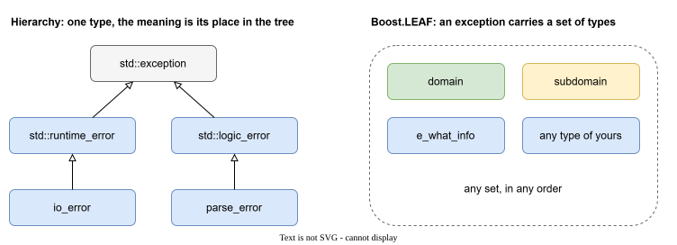

Exceptions in a large C++ project¶
The problem¶
In C++ an exception is a type. What it means is decided by its place in a class hierarchy: std::runtime_error is a runtime error, io_error is an input-output error, and so on.

This answers the question "what kind of error is it?". In a large program there is a second question that matters just as much: "where does it come from?" Which library, which part of it.
A hierarchy handles that badly:
- To tell libraries apart you need a tree of classes per library.
- An exception class is fixed. The text and the fields that it can carry are decided once, for everyone.
Boost.LEAF¶
Boost.LEAF is a library from the Boost collection that approaches this differently: an exception does not have to be a tree of classes. It can carry any set of types, and every type is just a piece of information.
The rest of this documentation uses LEAF the same way.
Boost.LEAF in three ideas¶
1. A throw puts a set of types into the exception.
leaf::throw_exception(library_A{}, part_1{}, e_what_info{ "library_A, part_1" });
library_A{}, part_1{} and e_what_info{...} are independent types. The exception now holds all three.
2. A handler asks for the types it needs.
leaf::try_catch(
[]{ /* code that may throw */ },
[](const library_A&, const part_1&)
{
// runs only if the exception has both types
}
);
A handler matches when every type it asks for is in the exception. The other types do not get in its way. If no handler matches, the exception goes on.
3. Types can be added on the way up.
auto load = leaf::on_error(library_B{}, part_2{});
While load is alive, every exception that passes through the scope gets two more types. Keep the object in a variable. If you drop it, the types are added and removed at once.
That is enough to continue. The next page takes an ordinary project and uses these three ideas on it: A typical project.